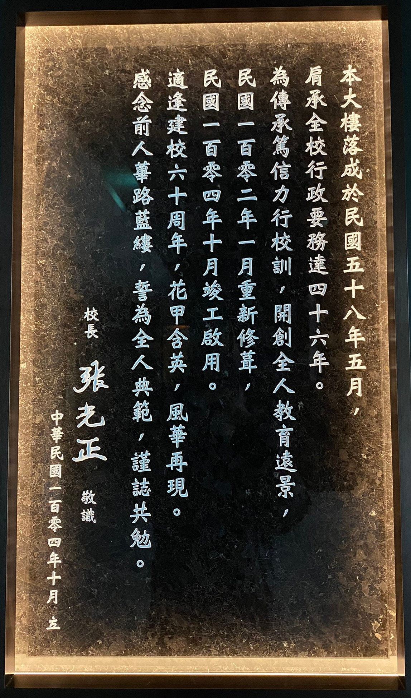

中原大學校史博物館
校史館緣由
中原大事紀
設計理念
展廳介紹
力行廳
篤信廳
影片介紹
關於我們
2017年校慶當天，在中原大學張光正校長的催生下，以彰顯「落實全人教育之典範大學」的全人校史博物館誕生了，是國內大專校院少見以「博物館」概念打造的校史館，展現出中原大學對歷史及美學結合的重視及用心。
中原全人校史館博物館分設篤信廳及力行廳，正呼應著本校之校訓，其設計意涵代表著「我們因為篤信、所以擁有上帝的祝福；我們因為力行，所以邁向全人典範」。整體設計由本校室內設計學系校友林志峰老師協助總策展，透過不同的展示手法，呈現中原各時期發展及落實全人教育的軌跡，藉此傳遞與展現本校教育理念與辦學成果，進而帶動全人教育的傳承與擴散。

回首過去，本校從初創時期的艱辛辦學困境，一路篳路藍縷的走向新象時期，整體校務蓬勃成長，躍升為一流的私立大學，成為以全人教育著稱的高等教育學府。期盼未來，全人校史博物館將成為傳遞與展現本校辦學精神與成果的重要基地，也是中原人回家團聚的重要場所。